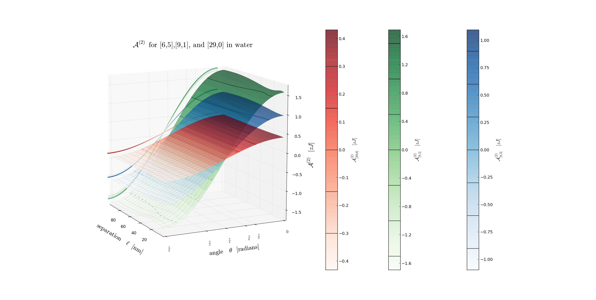

Next:
Total Hamaker: + for
Up:
Fully Retarded
Previous:
Hamaker 0: for [6,5],
Contents
Hamaker 2:
for [6,5], [9,1], and [29,0] in water
Figure 11:
for [6,5], [9,1], and [29,0] in water.

Jaime 2014-04-09